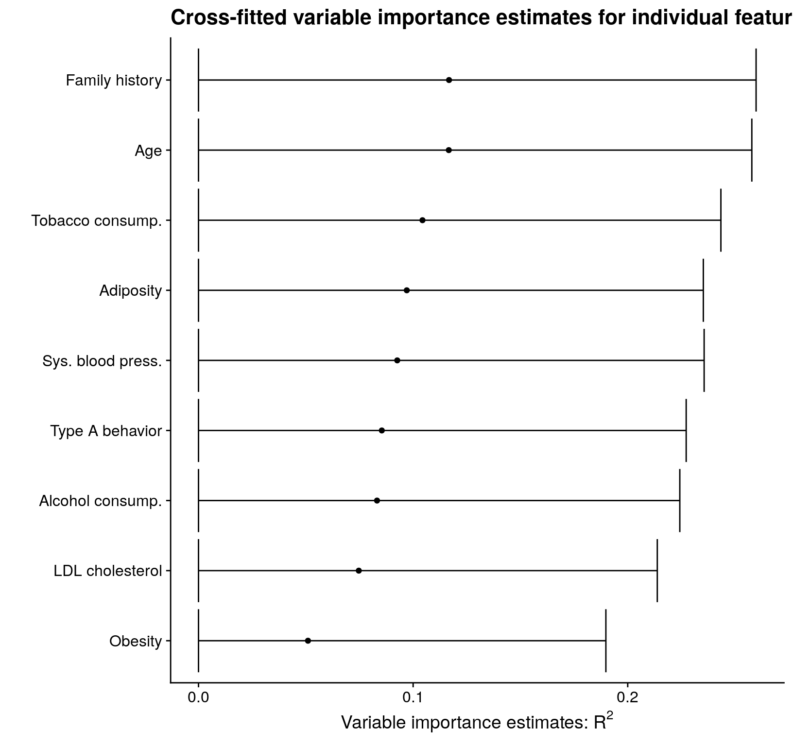
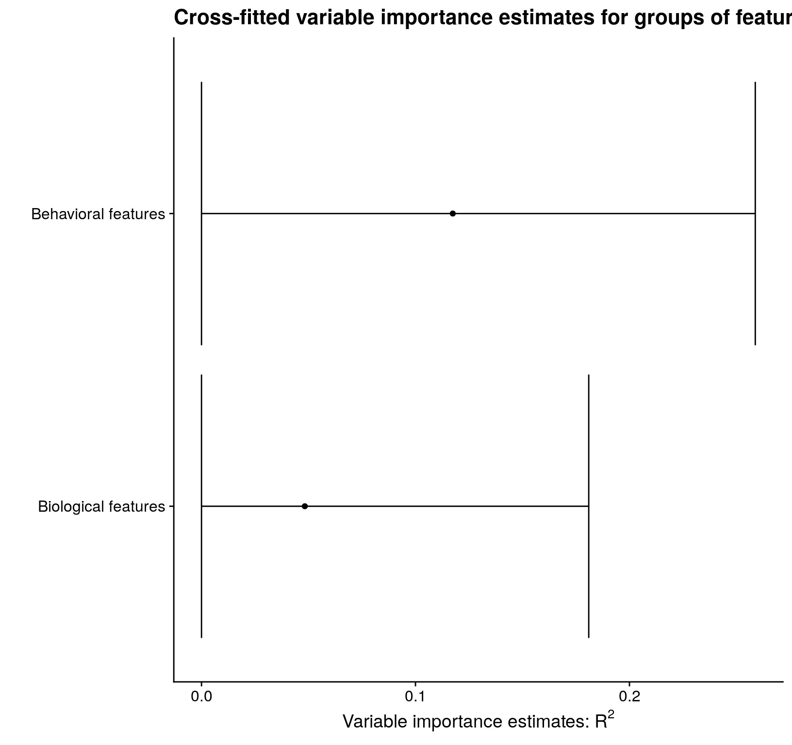

vimp
vignettes/precomputed-regressions.Rmd
precomputed-regressions.Rmd
library("vimp")
library("SuperLearner")
#> Warning: package 'SuperLearner' was built under R version 4.0.5
#> Warning: package 'nnls' was built under R version 4.0.3
#> Warning: package 'gam' was built under R version 4.0.5
#> Warning: package 'foreach' was built under R version 4.0.5In the main vignette, we
analyzed the VRC01 data (Magaret, Benkeser,
Williamson, et al. 2019), a subset of the data freely available
from the Los Alamos National Laboratory’s Compile, Neutralize, and Tally
Neutralizing Antibody Panels database. Information about these data is
available here. In each of
the analyses, I used run_regression = TRUE. In this
vignette, I discuss how to use precomputed regression function estimates
with vimp. The results of this analysis replicate the
analysis in the main
vignette.
# read in the data
data("vrc01")
# subset to the columns of interest for this analysis
library("dplyr")
#>
#> Attaching package: 'dplyr'
#> The following objects are masked from 'package:stats':
#>
#> filter, lag
#> The following objects are masked from 'package:base':
#>
#> intersect, setdiff, setequal, union
library("tidyselect")
# retain only the columns of interest for this analysis
y <- vrc01$ic50.censored
X <- vrc01 %>%
select(starts_with("geog"), starts_with("subtype"), starts_with("length"))
set.seed(1234)
vrc01_folds <- make_folds(y = y, V = 2)As in the main vignette, we
first start by fitting only linear regression models. In this section,
we use the function vim(); this function does not use
cross-fitting to estimate variable importance, and greatly simplifies
the code for precomputed regression models.
library("rlang")
vrc01_subset <- vrc01 %>%
select(ic50.censored, starts_with("geog"), starts_with("subtype"), starts_with("length")) %>%
rename(y = ic50.censored)
# estimate prediction function on each subset, predict on held-out fold
full_fit <- vector("numeric", length = nrow(vrc01))
for (v in 1:2) {
train_v <- subset(vrc01_subset, vrc01_folds != v)
test_v <- subset(vrc01_subset, vrc01_folds == v)
full_mod <- glm(y ~ ., data = train_v)
full_fit[vrc01_folds == v] <- predict(full_mod, newdata = test_v)
}
# estimate the reduced conditional means for each of the individual variables
# remove the outcome for the predictor matrix
geog_indx <- max(which(grepl("geog", names(X))))
for (i in seq_len(ncol(X) - geog_indx)) {
this_name <- names(X)[i + geog_indx]
red_fit <- vector("numeric", length = nrow(vrc01))
for (v in 1:2) {
train_v <- subset(vrc01_subset, vrc01_folds != v)
test_v <- subset(vrc01_subset, vrc01_folds == v)
red_fit[vrc01_folds == v] <- suppressWarnings(
predict(glm(y ~ ., data = train_v %>% select(-!!this_name)),
newdata = test_v)
)
}
this_vim <- vim(Y = y, f1 = full_fit, f2 = red_fit, indx = i + geog_indx,
run_regression = FALSE, type = "r_squared",
sample_splitting_folds = vrc01_folds, scale = "logit")
if (i == 1) {
lm_mat <- this_vim
} else {
lm_mat <- merge_vim(lm_mat, this_vim)
}
}
# print out the matrix
lm_mat
#> Variable importance estimates:
#> Estimate SE 95% CI VIMP > 0 p-value
#> s = 21 0.1709232 0.07644511 [0.06683172, 0.3724340] TRUE 0.01267934
#> s = 17 0.1662249 0.07767087 [0.06232601, 0.3742047] TRUE 0.01617256
#> s = 14 0.1641874 0.07765390 [0.06085506, 0.3732460] TRUE 0.01724274
#> s = 9 0.1641874 0.07765390 [0.06085506, 0.3732460] TRUE 0.01724274
#> s = 12 0.1641874 0.07765390 [0.06085506, 0.3732460] TRUE 0.01724274
#> s = 5 0.1641874 0.07765390 [0.06085506, 0.3732460] TRUE 0.01724274
#> s = 15 0.1641874 0.07765390 [0.06085506, 0.3732460] TRUE 0.01724274
#> s = 8 0.1641874 0.07765390 [0.06085506, 0.3732460] TRUE 0.01724274
#> s = 13 0.1641874 0.07765390 [0.06085506, 0.3732460] TRUE 0.01724274
#> s = 11 0.1641874 0.07765390 [0.06085506, 0.3732460] TRUE 0.01724274
#> s = 6 0.1641874 0.07765390 [0.06085506, 0.3732460] TRUE 0.01724274
#> s = 10 0.1641874 0.07765390 [0.06085506, 0.3732460] TRUE 0.01724274
#> s = 7 0.1641874 0.07765390 [0.06085506, 0.3732460] TRUE 0.01724274
#> s = 20 0.1638964 0.07774146 [0.06057232, 0.3734127] TRUE 0.01750584
#> s = 19 0.1626376 0.07934585 [0.05837835, 0.3782914] TRUE 0.02019537
#> s = 16 0.1597680 0.07730619 [0.05794103, 0.3702210] TRUE 0.01938165
#> s = 18 0.1542358 0.07595770 [0.05504322, 0.3634327] TRUE 0.02115043In this section, we will use cross-fitting and pre-computed estimates
of the regression functions. This can be especially useful if you have
already run a call to CV.SuperLearner – that function
returns estimates based on each observation being part of the hold-out
set. However, while this approach can save you some computation time, it
requires a hefty amount of mental overhead.
We will use CV.SuperLearner to fit the individual
regression functions, taking care to use the same cross-fitting folds in
each regression. We will then create two groups of validation folds for
sample-splitting. For this analysis, we will use V = 2
folds for cross-fitted variable importance estimation (as we did in the
main vignette). Note that this
entails running CV.SuperLearner with \(2V = 4\) folds.
First, we estimate the regression function based on all variables:
learners <- "SL.ranger"
# estimate the full regression function
V <- 2
set.seed(4747)
full_cv_fit <- suppressWarnings(
SuperLearner::CV.SuperLearner(
Y = y, X = X, SL.library = learners, cvControl = list(V = 2 * V),
innerCvControl = list(list(V = V)), family = binomial()
)
)
# get a numeric vector of cross-fitting folds
cross_fitting_folds <- get_cv_sl_folds(full_cv_fit$folds)
# get sample splitting folds
set.seed(1234)
sample_splitting_folds <- make_folds(unique(cross_fitting_folds), V = 2)
full_cv_preds <- full_cv_fit$SL.predictNext, to estimate the importance of each variable, we need to estimate the reduced regression function for each variable:
vars <- names(X)[(geog_indx + 1):ncol(X)]
set.seed(1234)
for (i in seq_len(length(vars))) {
# use "eval" and "parse" to assign the objects of interest to avoid duplicating code
eval(parse(text = paste0("reduced_", vars[i], "_cv_fit <- suppressWarnings(SuperLearner::CV.SuperLearner(
Y = y, X = X[, -(geog_indx + i), drop = FALSE], SL.library = learners,
cvControl = SuperLearner::SuperLearner.CV.control(V = 2 * V, validRows = full_cv_fit$folds),
innerCvControl = list(list(V = V)), family = binomial()
))")))
eval(parse(text = paste0("reduced_", vars[i], "_cv_preds <- reduced_", vars[i], "_cv_fit$SL.predict")))
}Then we can plug these values into vimp_rsquared() (or
equivalently, cv_vim() with
type = "r_squared") as follows:
for (i in seq_len(length(vars))) {
# again, use "eval" and "parse" to assign the objects of interest to avoid duplicating code
eval(parse(text = paste0("cf_", vars[i], "_vim <- vimp_rsquared(Y = y,
cross_fitted_f1 = full_cv_preds, cross_fitted_f2 = reduced_", vars[i], "_cv_preds,
indx = (geog_indx + i), cross_fitting_folds = cross_fitting_folds,
sample_splitting_folds = sample_splitting_folds, run_regression = FALSE, alpha = 0.05,
V = V, na.rm = TRUE, scale = 'logit')")))
}
#> Warning in cv_vim(type = "r_squared", Y = Y, X = X, cross_fitted_f1 =
#> cross_fitted_f1, : Original estimate < 0; returning zero.
#> Warning in cv_vim(type = "r_squared", Y = Y, X = X, cross_fitted_f1 =
#> cross_fitted_f1, : Original estimate < 0; returning zero.
#> Warning in cv_vim(type = "r_squared", Y = Y, X = X, cross_fitted_f1 =
#> cross_fitted_f1, : Original estimate < 0; returning zero.
#> Warning in cv_vim(type = "r_squared", Y = Y, X = X, cross_fitted_f1 =
#> cross_fitted_f1, : Original estimate < 0; returning zero.
#> Warning in cv_vim(type = "r_squared", Y = Y, X = X, cross_fitted_f1 =
#> cross_fitted_f1, : Original estimate < 0; returning zero.
#> Warning in cv_vim(type = "r_squared", Y = Y, X = X, cross_fitted_f1 =
#> cross_fitted_f1, : Original estimate < 0; returning zero.
#> Warning in cv_vim(type = "r_squared", Y = Y, X = X, cross_fitted_f1 =
#> cross_fitted_f1, : Original estimate < 0; returning zero.
#> Warning in cv_vim(type = "r_squared", Y = Y, X = X, cross_fitted_f1 =
#> cross_fitted_f1, : Original estimate < 0; returning zero.
#> Warning in cv_vim(type = "r_squared", Y = Y, X = X, cross_fitted_f1 =
#> cross_fitted_f1, : Original estimate < 0; returning zero.
#> Warning in cv_vim(type = "r_squared", Y = Y, X = X, cross_fitted_f1 =
#> cross_fitted_f1, : Original estimate < 0; returning zero.
#> Warning in cv_vim(type = "r_squared", Y = Y, X = X, cross_fitted_f1 =
#> cross_fitted_f1, : Original estimate < 0; returning zero.
#> Warning in cv_vim(type = "r_squared", Y = Y, X = X, cross_fitted_f1 =
#> cross_fitted_f1, : Original estimate < 0; returning zero.
#> Warning in cv_vim(type = "r_squared", Y = Y, X = X, cross_fitted_f1 =
#> cross_fitted_f1, : Original estimate < 0; returning zero.
#> Warning in cv_vim(type = "r_squared", Y = Y, X = X, cross_fitted_f1 =
#> cross_fitted_f1, : Original estimate < 0; returning zero.
#> Warning in cv_vim(type = "r_squared", Y = Y, X = X, cross_fitted_f1 =
#> cross_fitted_f1, : Original estimate < 0; returning zero.
#> Warning in cv_vim(type = "r_squared", Y = Y, X = X, cross_fitted_f1 =
#> cross_fitted_f1, : Original estimate < 0; returning zero.
cf_ests <- merge_vim(cf_subtype.is.01_AE_vim,
cf_subtype.is.02_AG_vim, cf_subtype.is.07_BC_vim,
cf_subtype.is.A1_vim, cf_subtype.is.A1C_vim,
cf_subtype.is.A1D_vim, cf_subtype.is.B_vim,
cf_subtype.is.C_vim, cf_subtype.is.D_vim,
cf_subtype.is.O_vim, cf_subtype.is.Other_vim,
cf_length.env_vim, cf_length.gp120_vim, cf_length.loop.e_vim,
cf_length.loop.e.outliers_vim, cf_length.v5_vim,
cf_length.v5.outliers_vim)
all_vars <- c(paste0("Subtype is ", c("01_AE", "02_AG", "07_BC", "A1", "A1C", "A1D",
"B", "C", "D", "O", "Other")),
paste0("Length of ", c("Env", "gp120", "V5", "V5 outliers", "Loop E",
"Loop E outliers")))And we can view them all simultaneously by plotting:
library("ggplot2")
library("cowplot")
#> Warning: package 'cowplot' was built under R version 4.0.5
theme_set(theme_cowplot())
cf_est_plot_tib <- cf_ests$mat %>%
mutate(
var_fct = rev(factor(s, levels = cf_ests$mat$s,
labels = all_vars[as.numeric(cf_ests$mat$s) - geog_indx],
ordered = TRUE))
)
# plot
cf_est_plot_tib %>%
ggplot(aes(x = est, y = var_fct)) +
geom_point() +
geom_errorbarh(aes(xmin = cil, xmax = ciu)) +
xlab(expression(paste("Variable importance estimates: ", R^2, sep = ""))) +
ylab("") +
ggtitle("Estimated individual feature importance") +
labs(subtitle = "in the VRC01 data (considering only geographic confounders, subtype, and viral geometry)")
Finally, we can estimate and plot group importance:
set.seed(91011)
reduced_subtype_cv_fit <- suppressWarnings(
SuperLearner::CV.SuperLearner(
Y = y, X = X[, -c(5:15), drop = FALSE], SL.library = learners,
cvControl = SuperLearner::SuperLearner.CV.control(V = 2 * V, validRows = full_cv_fit$folds),
innerCvControl = list(list(V = V)), family = binomial()
)
)
reduced_subtype_cv_preds <- reduced_subtype_cv_fit$SL.predict
reduced_geometry_cv_fit <- suppressWarnings(
SuperLearner::CV.SuperLearner(
Y = y, X = X[, -c(16:21), drop = FALSE], SL.library = learners,
cvControl = SuperLearner::SuperLearner.CV.control(V = 2 * V, validRows = full_cv_fit$folds),
innerCvControl = list(list(V = V)), family = binomial()
)
)
reduced_geometry_cv_preds <- reduced_geometry_cv_fit$SL.predict
cf_subtype_vim <- vimp_rsquared(
Y = y, cross_fitted_f1 = full_cv_preds, cross_fitted_f2 = reduced_subtype_cv_preds,
indx = 5:15, run_regression = FALSE, V = V,
cross_fitting_folds = cross_fitting_folds, sample_splitting_folds = sample_splitting_folds,
scale = "logit"
)
cf_geometry_vim <- vimp_rsquared(
Y = y, cross_fitted_f1 = full_cv_preds, cross_fitted_f2 = reduced_geometry_cv_preds,
indx = 16:21, run_regression = FALSE, V = V,
cross_fitting_folds = cross_fitting_folds, sample_splitting_folds = sample_splitting_folds,
scale = "logit"
)
cf_groups <- merge_vim(cf_subtype_vim, cf_geometry_vim)
all_grp_nms <- c("Viral subtype", "Viral geometry")
grp_plot_tib <- cf_groups$mat %>%
mutate(
grp_fct = factor(case_when(
s == "5,6,7,8,9,10,11,12,13,14,15" ~ "1",
s == "16,17,18,19,20,21" ~ "2"
), levels = c("1", "2"), labels = all_grp_nms, ordered = TRUE)
)
grp_plot_tib %>%
ggplot(aes(x = est, y = grp_fct)) +
geom_point() +
geom_errorbarh(aes(xmin = cil, xmax = ciu)) +
xlab(expression(paste("Variable importance estimates: ", R^2, sep = ""))) +
ylab("") +
ggtitle("Estimated feature group importance") +
labs(subtitle = "in the VRC01 data (considering only geographic confounders, subtype, and viral geometry)")
In this document, we learned a second method for computing variable
importance estimates: rather than having vimp run all
regression functions for you, you can compute your own regressions and
pass these to vimp. The results are equivalent, but there
is a tradeoff: what you save in computation time by only computing the
full regression once must be balanced with the mental overhead of
correctly computing the regressions. Additionally, this task is more
difficult when using cross-fitted variable importance, which I recommend
in nearly all cases when using flexible machine learning tools.